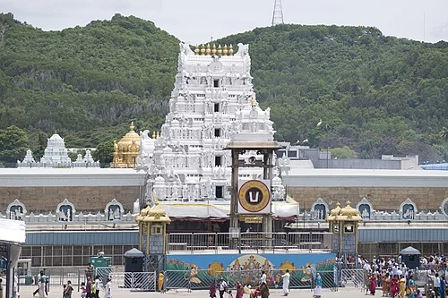
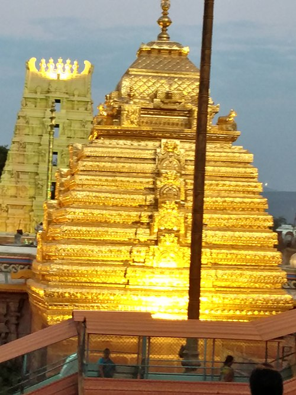
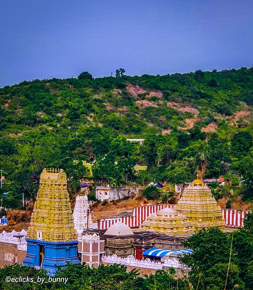
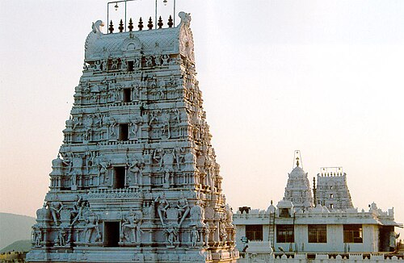

1. Tirumala Venkateswara Temple
One of the most famous and richest temples in the world, dedicated to Lord Venkateswara in Tirupati.
 Wikipedia2. Mallikarjuna Temple, Srisailam
One of the twelve Jyotirlingas of Lord Shiva and also one of the Shakti Peethas.
 Wikipedia3. Kanaka Durga Temple, Vijayawada
Located on the Indrakeeladri hill, this temple is dedicated to Goddess Durga and is a significant Shakti Peetha.
 Wikipedia
Wikipedia
4. Simhachalam Temple, Visakhapatnam
A famous temple of Lord Narasimha, combining both Vaishnavite and Shaivite traditions.
 Wikipedia5. Annavaram Satyanarayana Temple
Dedicated to Lord Veera Venkata Satyanarayana Swamy, situated on Ratnagiri Hill.
 Wikipedia